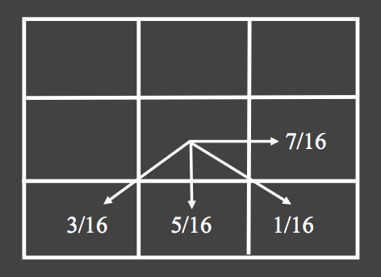

Software
Download Unix Executable:
Example Usage:
$ ./image -help
Some Basics
Pixel is the basic unit of programmable color in a computer image. Each pixel is a sample of an original image. The intensity of each pixel is a variable. A pixel is typically represented by three or four component intensities such as red, green, and blue, which are typically in the range of 0 – 255, this is also known as the RGB color model.
Changing Brightness
To adjust image brightness, we simply scale each RGB component of a pixel by a positive factor α, When α is 0, we get a pure black image, when α is 1 we get the original image back. In other words, if we want to darken the image, we interpolate between the zero RGB intensities (black image) and the current image. Note that linear interpolation is often used to blend two images by interpolating between between corresponding pixel values of the two images as in the following example, where α and (1 - α) are used in a weighted average to obtain the interpolated pixel values:
output_rgb_component = (1 - α) * black_rgb_component + α * input_rgb_component
Since black RGB component is 0, we can simplify the formula:
output_rgb_component = α * input_rgb_componentWe can also obtain the brightened image through extrapolation.
-
0.0

Black Image -
0.5
-
1.0
Input Image -
1.5

-
2.0
Example Usage:
$ ./image -brightness 1.5 <input.bmp >.out.bmp
Changing Contrast
Contrast is the difference in luminance that makes an object distinguishable. It can be controlled by interpolating and extrapolating between a constant grey image and the current image just like how we control brightness with a contract factor α. Interpolation reduces contrast and extrapolation boosts the contrast. The grey image is obtained by calculating the average image luminance and assign each grey pixel’s rgb components to the same average image luminance. Note that when a pixel’s rgb components are of the same value, it is on the grayscale. Here is one way to calculate pixel luminance (http://www.itu.int/rec/R-REC-BT.601):
pixel_luminance = (0.299 * R + 0.587 * G + 0.114 * B)
Then apply interpolation on all rgb component for each pixel in the image as follows:
output_rgb_component = (1 - α) * average_pixel_luminance + α * input_rgb_componentA contrast factor of 0 produces a grey image with no contrast, 1 gives the original image, between 0 and 1 loses contrast, greater than 1 increases contrast, and less than 0 inverts the image.
-
-1.0

-
0.0

Grey Image -
0.5

-
1.0

Input Image -
2.0

Example Usage:
$ ./image -contrast 1.5 <input.bmp >.out.bmp
Changing Saturation
Saturation refers to the perceived intensity of a specific color. It is the purity of the color and represents the amount of grey in proportion to the hue. To control the saturation of an image, pixel components must move towards or away from the pixel's luminance value. In other words, we interpolate between the grayscale version of the input image and the input image using the saturation factor α. The grayscale image is obtained by calculating a unique luminance per pixel using the same pixel luminance calculation discussed in the above section. Then apply the same interpolation technique as follows:
output_rgb_component = (1 - α) * current_pixel_luminance + α * input_rgb_componentWhen α is 0, we obtain the grayscale version of the image; when α is 1, we obtain the original input image. So when α is between 0 and 1, it makes the image grayer, reducing the saturation of the colors. For α bigger than 1, we extrapolate increasing saturation. As for negative values, the hues or colors of the input image is inverted, like a photographic negative.
-
-1.0

-
0.0
Greyscale Image -
0.5

-
1.0

Input Image -
2.0
Example Usage:
$ ./image -saturation 1.5 <input.bmp >.out.bmp
Changing Gamma
Some images are not corrected for the nonlinear relationship between pixel value and displayed intensity for a color monitor. This nonlinear relationship can be described by a function raised to the power of gamma (γ):
displayed_intensity = rgb_component γ
Gamma correction corrects this by applying the inverse of this relationship to pixel values for all pixels in an image. Normally, input RGB component and output RGB component are in the range of 0 – 1; if the input RGB component is in the range of 0 - 255, we divide that component by 255 to normalize it:
normalized_input_rgb_component = input_rgb_component / 255When γ is 1, the output image is unchanged, γ greater than 1 brighten it, and lower values darken it. Note that γ should be positive. If γ is 0, the output is a black image; if γ is smaller than 0, no processing is done and the output is the input image.
normalized_output_rgb_component = normalized_input_rgb_component (1.0 / γ)
output_rgb_component = normalized_output_rgb_component * 255
-
γ = 0.0

-
0.5

-
1.0

Input Image -
2.0
-
8.0

Example Usage:
$ ./image -gamma 2.0 <input.bmp >.out.bmp
Cropping Images
This allows one to crop the image, for instance to focus on a mandrill’s eye or nose as shown in the cropped picture below. The algorithm works by copying pixels at appropriate positions based on the offset x and y from a contiguous 1d array in the original image to a new image with newly specified width and height. We assume that x ranges from 0 to width-1 from left to right and y from 0 to height-1 from top to bottom. w and h are the size of the cropped image.
-
Original Image (512 x 512)

-
Cropped Image: x=0, y=0, w=512, h=512
-
Cropped Image: x=120, y=35, w=100, h=60
-
Cropped Image: x=160, y=80, w=180, h=370

Below shows how we handle some interesting edge cases:
- Case 1: If any of x, y, w, or h are negative, the output is an empty image.
- Case 2: If cropped image dimension exceeds original image bounds, that is if cropping parameter w, h larger than the original image height and width. Then the cropped image will only contain the captured portion of the original image, i.e. cropped_image_max_height = original_image_height - y
- Case 3: If x or y exceeds original image bounds then the output is an empty image
- Case 4: If w or h are 0 then the output is an empty image
-
Case 2: x = 150, y = 50, w=15000, h=100

Example Usage:
$ ./image -crop 150 50 100 100 <input.bmp >.out.bmp
Quantization and Dithering
Dithering is used to create the illusion of "color depth" in images with a limited color palette using color quantization and reducing quantization errors. For example, when dithering an image of 8-bit color to 1-bit color, the colors that are available in the 8-bit color palette are approximated by a diffusion of colored pixels from the available 1-bit color palette. We have implemeted various techniques for dithering images with a small number of bits (1-8 bit) that we'll discuss below.
Quantize
Color quantization is a process that reduces the number of distinct colors used in an image. To quantizes the image we use nbits per color channel. We first need to define a map between the input [0 - 255] and the output [0 - (2nbits - 1)]. Note that we only support nbits between 1 and 8 in our implementation. A simple way of doing this is to first convert all values into floating point to lie between 0 and 1 (by dividing the input by 256). Then, select the quantum using
q = floor(p / 256.0f * b)
where q is the appropriate quantum, p is the original pixel value in the range from 0 to 1, and b is the number of bins or quanta and is calculated using
b = 2nbits
These values must then be mapped back into the 0 - 255 range, which can be done by computing the final color
cf = floor(255 * q / (b - 1))
Note that a fast way for calculate b = 2nbits is to use bit shifting in c++
b = 1 << nbits
The problem with quantization is that it introduces a clear contouring for lower numbers of bits. To prevent this from happening we will need to handle quantization errors better. Dithering is such a process that can distribute errors among pixels to obtain better results. We have implemented two dithering algorithms here: Random Dither and Floyd-Steinberg Dither.
Random Dither
Random Dither adds some noise before quantizing. The noise helps to break up the contouring. Perceptually, noise is found to be preferable since human eyes are more tolerant of high-frequency noise than contours or aliasing. In addition to the quantization process above, we add noise in the range from [-.5 ... +.5], which is generated using the random function.
q = floor(p / 256.0f * noise)
The algorithm achieves dithering using error diffusion, meaning it pushes (adds) the residual quantization error of a pixel onto its neighboring pixels, to be dealt with later. It spreads the debt out according to the distribution (shown as a map of the neighboring pixels): 
stuff
-
γ = 0.0
-
0.5
-
1.0
Input Image -
2.0
-
8.0
Example Usage:
$ ./image -quantize 2 <input.bmp >.out.bmp